Code
library(tidyverse)
library(tidycensus)
library(sf)
library(caret)
Sys.getenv("CENSUS_API_KEY") != "" # should print TRUE[1] TRUEMUSA 5080 · Integrates Weeks 1–5 · Due Friday, October 16
This is not a competition. There’s no leaderboard and no target RMSE. The goal is to practice the full prediction workflow on a question you choose, and to find out what actually helps. Some features you’re sure will help won’t, and some you add on a whim will. Both are findings.
You’ll:
Timing. Parts 1–4 use only what we’ve covered through Week 5. You can finish them before the October 9 lecture. Part 5 is new material; the lecture explains it, and the instructions below give you the essentials.
Type the code yourself. The worked examples show the pattern. Your job is to apply it to your outcome and your data choices.
Every model is cross-validated on the same tracts with the same folds, so the rows in your model log are comparable. If a new variable has missing values, fill them (for example, 0 for a count, or the median with a note) or choose a different variable. The cv_rmse() helper below will stop and tell you if you break this rule.
Your outcome comes from the 2019–2023 ACS. Pull open data from 2023 or earlier (2021–2023 is ideal). Using 2025 data to predict a 2023 outcome uses information from the future, which a real prediction model would never have.
Don’t use any variable that’s built from your outcome or measures the same thing another way. Ask yourself: would an agency trying to predict this outcome for a tract have this variable? If the answer is “only because it’s basically the outcome,” leave it out.
library(tidyverse)
library(tidycensus)
library(sf)
library(caret)
Sys.getenv("CENSUS_API_KEY") != "" # should print TRUE[1] TRUEThis function runs 10-fold cross-validation with the same seed every time, so every model in your log is tested on the same folds. You don’t need to change it. Read it once so you know what it does.
ctrl <- trainControl(method = "cv", number = 10)
cv_rmse <- function(formula, data) {
df <- if (inherits(data, "sf")) st_drop_geometry(data) else data
vars <- all.vars(formula)
bad <- vars[sapply(vars, function(v) any(is.na(df[[v]])))]
if (length(bad) > 0) {
stop("These variables have NAs: ", paste(bad, collapse = ", "),
". Fill them or choose another variable (Rule 1: don't drop rows).")
}
set.seed(5080)
fit <- train(formula, data = df, method = "lm", trControl = ctrl)
fit$results$RMSE
}Every time you fit a new model, add a row. By the end, this table is the story of your assignment.
model_log <- tibble(
model = character(),
added = character(),
cv_rmse = numeric(),
notes = character()
)Pick a tract-level ACS variable for Philadelphia that matters for policy. Two outcomes are off limits: median gross rent (we did it in lab) and median home value (save it for A4).
Some ideas if you’re stuck:
| Outcome | Why an agency might care | ACS table |
|---|---|---|
| % of households with no vehicle | Transit planning | B08201 or B25044 |
| Mean travel time to work | Access to jobs | B08013_001 ÷ B08303_001 |
| % of people below poverty | Targeting services | B17001 |
| % of housing units vacant | Housing and blight | B25002 |
| % of households overcrowded | Housing conditions | B25014 |
Use load_variables(2023, "acs5") to browse and find exact variable codes.
Choose three to five ACS predictors for your baseline model. They should be things that plausibly relate to your outcome, but none of them may be built from your outcome (Rule 3).
philly_tracts <- get_acs(
geography = "tract",
state = "PA",
county = "Philadelphia",
variables = c(
total_pop = "B01003_001",
hh_total = "B08201_001",
hh_noveh = "B08201_002",
# baseline predictors
med_hh_inc = "B19013_001",
occ_units = "B25003_001",
renter_occ = "B25003_003",
pov_univ = "B17001_001",
pov_below = "B17001_002",
med_age = "B01002_001"
),
year = 2023,
output = "wide",
geometry = TRUE
) %>%
st_transform(2272)
|
| | 0%
|
|= | 1%
|
|= | 2%
|
|== | 3%
|
|=== | 4%
|
|==== | 5%
|
|===== | 6%
|
|===== | 7%
|
|===== | 8%
|
|====== | 8%
|
|====== | 9%
|
|======= | 10%
|
|======== | 11%
|
|========= | 12%
|
|========= | 13%
|
|========== | 14%
|
|========== | 15%
|
|=========== | 16%
|
|============ | 17%
|
|============= | 18%
|
|============= | 19%
|
|============== | 20%
|
|=============== | 21%
|
|=============== | 22%
|
|================ | 23%
|
|================= | 24%
|
|================= | 25%
|
|================== | 26%
|
|=================== | 27%
|
|=================== | 28%
|
|==================== | 29%
|
|===================== | 30%
|
|===================== | 31%
|
|====================== | 32%
|
|======================= | 33%
|
|======================== | 34%
|
|========================= | 35%
|
|========================= | 36%
|
|========================== | 37%
|
|=========================== | 38%
|
|=========================== | 39%
|
|============================ | 40%
|
|============================= | 41%
|
|============================== | 42%
|
|============================== | 43%
|
|=============================== | 44%
|
|================================ | 45%
|
|================================ | 46%
|
|================================= | 47%
|
|================================== | 48%
|
|================================== | 49%
|
|=================================== | 50%
|
|==================================== | 51%
|
|===================================== | 52%
|
|===================================== | 53%
|
|====================================== | 54%
|
|======================================= | 55%
|
|======================================= | 56%
|
|========================================= | 58%
|
|========================================= | 59%
|
|========================================== | 60%
|
|=========================================== | 61%
|
|=========================================== | 62%
|
|============================================ | 63%
|
|============================================= | 64%
|
|============================================= | 65%
|
|============================================== | 66%
|
|=============================================== | 67%
|
|=============================================== | 68%
|
|================================================ | 69%
|
|================================================= | 70%
|
|================================================= | 71%
|
|================================================== | 71%
|
|================================================== | 72%
|
|=================================================== | 73%
|
|==================================================== | 74%
|
|==================================================== | 75%
|
|===================================================== | 76%
|
|====================================================== | 77%
|
|====================================================== | 78%
|
|======================================================= | 79%
|
|======================================================== | 80%
|
|======================================================== | 81%
|
|========================================================= | 82%
|
|========================================================== | 83%
|
|=========================================================== | 84%
|
|=========================================================== | 85%
|
|============================================================ | 86%
|
|============================================================= | 87%
|
|============================================================= | 88%
|
|============================================================== | 88%
|
|=============================================================== | 89%
|
|=============================================================== | 90%
|
|================================================================ | 91%
|
|================================================================= | 92%
|
|================================================================= | 93%
|
|================================================================== | 94%
|
|=================================================================== | 95%
|
|=================================================================== | 96%
|
|==================================================================== | 97%
|
|===================================================================== | 98%
|
|===================================================================== | 99%
|
|======================================================================| 100%philly_tracts <- philly_tracts %>%
mutate(
y_prop = hh_novehE / hh_totalE,
y_moe = 100 * moe_prop(hh_novehE, hh_totalE, hh_novehM, hh_totalM),
y = 100 * y_prop,
y_cv = 100 * (y_moe / 1.645) / y,
pct_renter = 100 * renter_occE / occ_unitsE,
pct_pov = 100 * pov_belowE / pov_univE,
pop_density = total_popE / (as.numeric(st_area(geometry)) / 27878400)
)Before you commit, check three things.
# How many tracts have no value for your outcome?
sum(is.na(philly_tracts$y))[1] 20# How reliable is it?
summary(philly_tracts$y_cv) Min. 1st Qu. Median Mean 3rd Qu. Max. NAs
3.572 17.204 23.410 Inf 31.959 Inf 20 philly_tracts %>%
mutate(reliability = case_when(
y_cv < 12 ~ "High",
y_cv <= 40 ~ "Moderate",
TRUE ~ "Low"
)) %>%
st_drop_geometry() %>%
count(reliability) reliability n
1 High 29
2 Low 66
3 Moderate 313# What does the distribution look like?
ggplot(philly_tracts, aes(x = y)) +
geom_histogram(bins = 30) +
theme_minimal()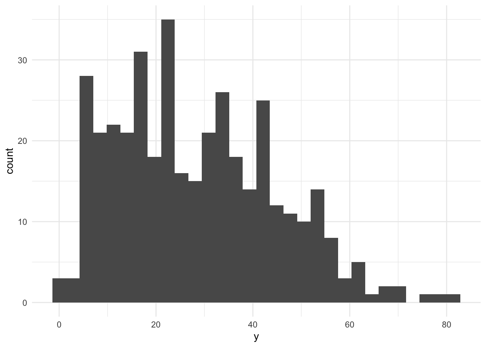
If more than about a third of tracts have low reliability, consider a different outcome, or one built from larger counts. Write your reasoning either way.
Answer (2–3 sentences): What is your outcome, why would an agency want to predict it, and how reliable is it?
My outcome is the percentage of households in each Philadelphia tract with no vehicle available (found by B08201_002 divided by B08201_001), which ranges from near 0% to around 85%. The histogram centers around 20–25%. An agency like SEPTA would want to predict it because car-free households are most dependent on bus frequency and accessibility by walking to the nearest bus stop. My model would assist planners in estimating need and planning for proposed service changes. Of 408 tracts, 29 are High reliability, 313 Moderate, and 66 Low. The 66 low outcomes are under the one-third threshold, so I’ll keep this outcome. I expect that low tracts are mostly those with small car-free shares where the CV inflates.
Filter once, here, and never again. Every later step uses tracts.
tracts <- philly_tracts %>%
filter(total_popE > 0,
!is.na(y),
!is.na(med_hh_incE),
!is.na(pct_renter),
!is.na(pct_pov),
!is.na(med_ageE),
!is.na(pop_density)
)
nrow(philly_tracts)[1] 408nrow(tracts)[1] 381Answer: How many tracts did you lose, and what kinds of places are they?
With filtering, I lose 27 of 408 tracts, and result in 381. About 20 of these have no households, so we can expect that these may be places like airports, parks, and the prisons. The rest have likely so few households that the ACS keeps median household income down. Losing these doesn’t remove any part of Philadelphia where SEPTA would intend to plan service.
Plot your outcome against each predictor before modeling (the Week 3 habit).
ggplot(tracts, aes(x = med_hh_incE, y = y)) + geom_point(alpha = 0.5) +
geom_smooth(method = "lm", se = FALSE) + theme_minimal()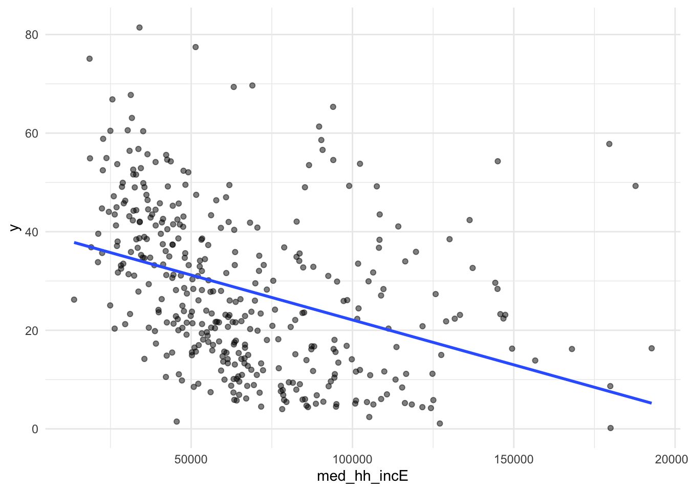
ggplot(tracts, aes(x = pct_renter, y = y)) + geom_point(alpha = 0.5) +
geom_smooth(method = "lm", se = FALSE) + theme_minimal()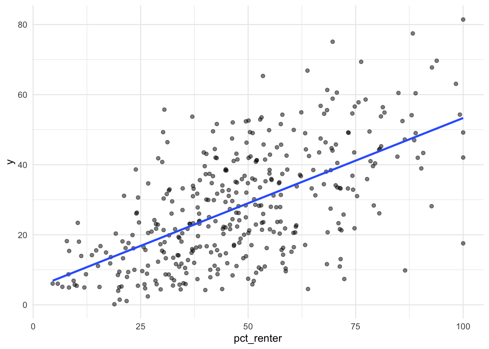
ggplot(tracts, aes(x = pct_pov, y = y)) + geom_point(alpha = 0.5) +
geom_smooth(method = "lm", se = FALSE) + theme_minimal()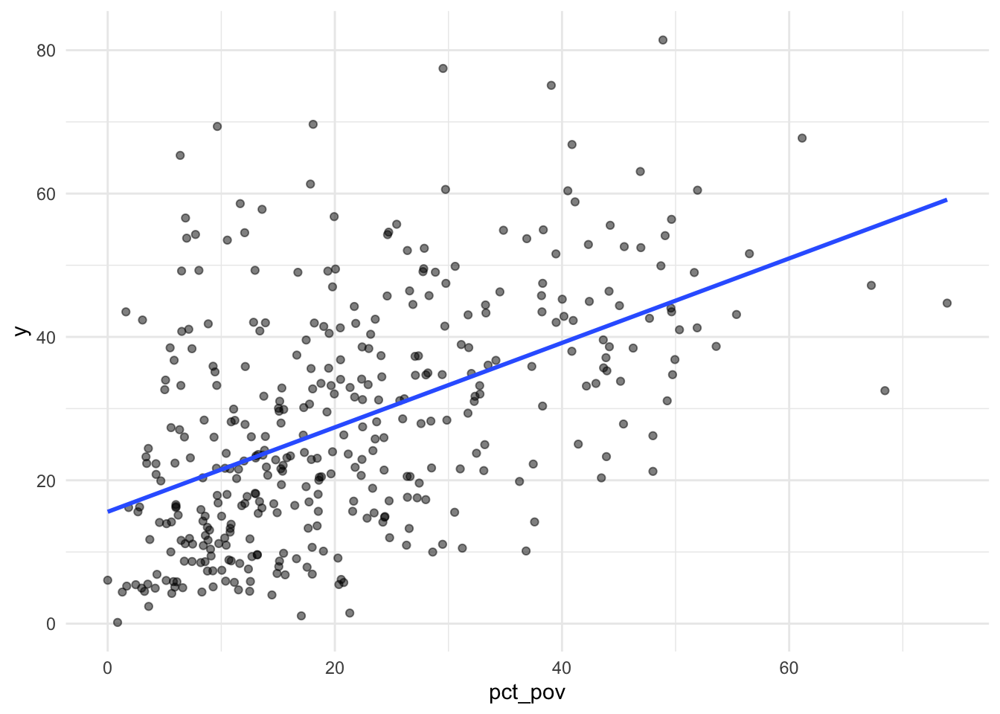
ggplot(tracts, aes(x = med_ageE, y = y)) + geom_point(alpha = 0.5) +
geom_smooth(method = "lm", se = FALSE) + theme_minimal()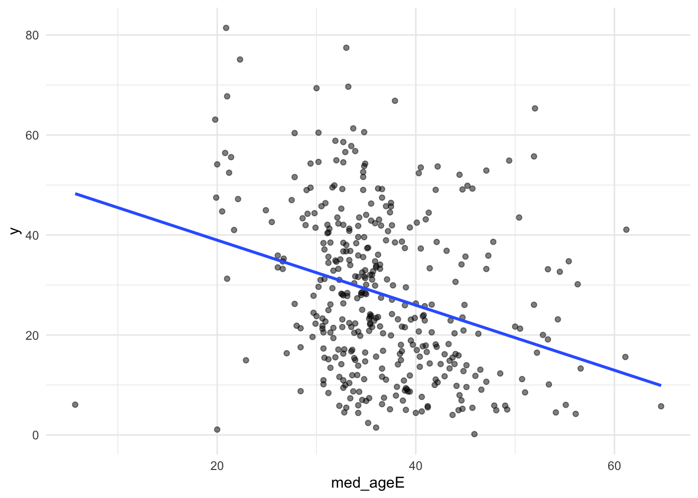
ggplot(tracts, aes(x = pop_density, y = y)) + geom_point(alpha = 0.5) +
geom_smooth(method = "lm", se = FALSE) + theme_minimal()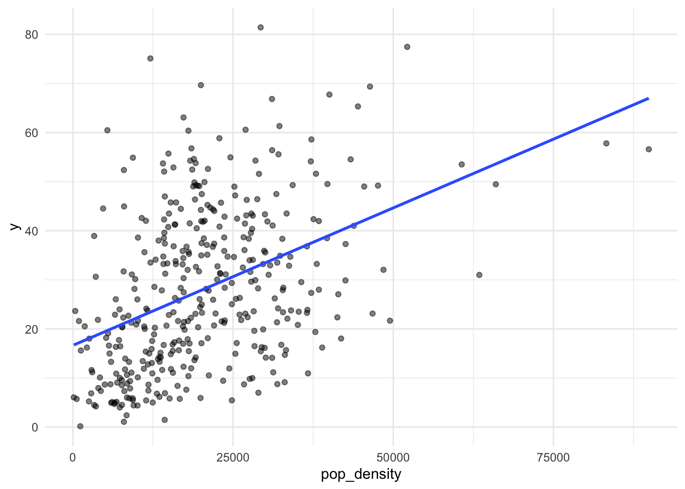
f1 <- y ~ pct_renter + log(pop_density) + log(med_hh_incE) + pct_pov
m1 <- lm(f1, data = tracts)
summary(m1)
Call:
lm(formula = f1, data = tracts)
Residuals:
Min 1Q Median 3Q Max
-34.702 -7.592 -1.036 6.825 35.315
Coefficients:
Estimate Std. Error t value Pr(>|t|)
(Intercept) 12.44246 23.53941 0.529 0.59741
pct_renter 0.35226 0.03060 11.510 < 2e-16 ***
log(pop_density) 5.42476 0.78123 6.944 1.68e-11 ***
log(med_hh_incE) -5.28543 2.00509 -2.636 0.00874 **
pct_pov 0.19480 0.07208 2.702 0.00719 **
---
Signif. codes: 0 '***' 0.001 '**' 0.01 '*' 0.05 '.' 0.1 ' ' 1
Residual standard error: 11.2 on 376 degrees of freedom
Multiple R-squared: 0.5324, Adjusted R-squared: 0.5274
F-statistic: 107 on 4 and 376 DF, p-value: < 2.2e-16model_log <- model_log %>%
add_row(model = "m1", added = "ACS baseline",
cv_rmse = cv_rmse(f1, tracts),
notes = "renter share, log density, log income, poverty")
model_log# A tibble: 1 × 4
model added cv_rmse notes
<chr> <chr> <dbl> <chr>
1 m1 ACS baseline 11.2 renter share, log density, log income, povertyOn tracts it hasn’t seen, the baseline model misses by about 11.2 percentage points of households without a vehicle.
Save this map. You’ll compare it to your final model’s map in Part 6.
tracts <- tracts %>% mutate(resid_m1 = residuals(m1))
ggplot(tracts) +
geom_sf(aes(fill = resid_m1), color = NA) +
scale_fill_gradient2(low = "#2166ac", mid = "grey95", high = "#b2182b", midpoint = 0) +
theme_void() +
labs(title = "Baseline model: where it's wrong",
subtitle = "Red = actual higher than predicted",
fill = "Residual")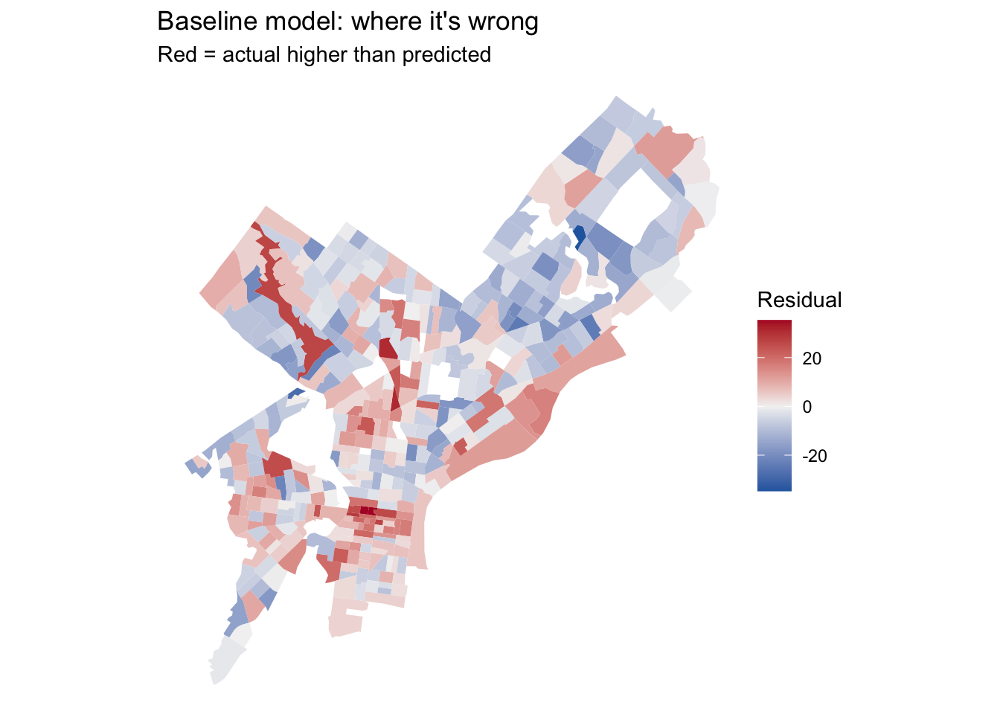
Answer: Where do the residuals cluster? What might those places have in common that your model doesn’t know about? Use this answer to choose your open data layers in Part 3.
The residuals cluster rather than scatter; many in Center City which is where the model underpredicts car-free households. The underpredicted/red places have more frequent rail service, walkable commercial corridors, and parking is scarce or expensive– all of which suggest that being car-free would be more helpful. In the northeast and parts of west side of Philadelphia, it overpredicts them. Density and renter share would still be high but households still own cars. Bus service is more relied on here. There are a few extreme red tracts along the Delaware and the northwest which may be low-household tracts. My ACS predictors currently do not measure how easy it would be to get around without a car.
Many of the city’s datasets on OpenDataPhilly are served through a Carto SQL API. You send a SQL query in a URL, and it sends back data. Ask for format=GeoJSON and st_read() reads the result directly, just like the Indego feed in Week 4.
The pattern:
https://phl.carto.com/api/v2/sql?format=GeoJSON&q=SELECT ... FROM table_name WHERE ...Three pieces of SQL are all you need:
SELECT the_geom, column1, column2 chooses which columns come back. Always include the_geom, or you get no geometry.FROM table_name chooses the dataset.WHERE ... filters rows. Filter in the query, not in R. Some tables have millions of rows, and pulling everything will be slow or fail.This helper builds the URL for you. Spaces and symbols in a URL need encoding, and URLencode() handles that.
carto_get <- function(sql) {
url <- paste0("https://phl.carto.com/api/v2/sql?format=GeoJSON&q=", URLencode(sql))
st_read(url, quiet = TRUE)
}On a dataset’s OpenDataPhilly page, look for the API link. The table name is the word after FROM in the example query. To see what values a column takes before you filter on it, ask for a count in CSV format:
# What kinds of crime are in the incidents table in 2023?
url <- paste0("https://phl.carto.com/api/v2/sql?format=csv&q=",
URLencode("SELECT text_general_code, COUNT(*) AS n
FROM incidents_part1_part2
WHERE dispatch_date >= '2023-01-01' AND dispatch_date < '2024-01-01'
GROUP BY text_general_code ORDER BY n DESC"))
read_csv(url)# A tibble: 32 × 2
text_general_code n
<chr> <dbl>
1 Thefts 37054
2 Other Assaults 25986
3 Motor Vehicle Theft 22478
4 Vandalism/Criminal Mischief 17346
5 All Other Offenses 13334
6 Theft from Vehicle 13002
7 Fraud 7661
8 Aggravated Assault No Firearm 5134
9 Burglary Residential 3800
10 Aggravated Assault Firearm 3320
# ℹ 22 more rowsburglary <- carto_get(
"SELECT the_geom, text_general_code, dispatch_date
FROM incidents_part1_part2
WHERE dispatch_date >= '2023-01-01' AND dispatch_date < '2024-01-01'
AND text_general_code = 'Burglary Residential'"
) %>%
st_transform(st_crs(tracts)) # Carto returns EPSG 4326; translate immediately
nrow(burglary)[1] 3800Some records have no location. Drop them with filter(!st_is_empty(burglary)), and count how many you lost. Every point you drop is a point that won’t be counted.
These tables were available on Carto as of this fall. If a query fails, check the dataset’s OpenDataPhilly page for the current table name.
| Data | Table | Filter on | Notes |
|---|---|---|---|
| Crime incidents | incidents_part1_part2 |
dispatch_date, text_general_code |
Pick specific offense types |
| Shooting victims | shootings |
date_ |
Small enough to pull several years |
| 311 requests | public_cases_fc |
requested_datetime, service_name |
Use the count query above to see service names |
| Indego stations | (not Carto) https://www.rideindego.com/stations/json/ |
— | The Week 4 feed |
Datasets not on Carto often have a GeoJSON download link on their OpenDataPhilly page. st_read() reads those URLs too. For example, navigage to https://opendataphilly.org/, find a dataset that you’d like to import. I found city landmarks. On the page there is a link to a GeoJSON file. I simply right-clicked on that hyperlink and copied it and then used st_read() and pasted the link:
landmarks <- st_read(“https://hub.arcgis.com/api/v3/datasets/6b2fe4a0fbe14e0a8e6afceaea230b8e_0/downloads/data?format=geojson&spatialRefId=4326&where=1%3D1”)
Pull at least two layers that you think relate to your outcome. Base your choice on your Part 2C answer.
layer1 <- bind_rows(
st_read("https://opendata.arcgis.com/api/v3/datasets/cf49c62fbc17430aa818e900556d207e_0/downloads/data?format=geojson&spatialRefId=4326", quiet = TRUE) %>%
select(geometry), # Regional Rail stations
st_read("https://opendata.arcgis.com/api/v3/datasets/af52d74b872045d0abb4a6bbbb249453_0/downloads/data?format=geojson&spatialRefId=4326", quiet = TRUE) %>%
select(geometry) # Market-Frankford + Broad Street stations
) %>%
st_transform(st_crs(tracts))
nrow (layer1)[1] 230layer2 <- carto_get(
"SELECT the_geom, licensetype, initialissuedate, inactivedate
FROM business_licenses
WHERE licensetype IN ('Food Establishment, Retail Permanent Location',
'Food Preparing and Serving',
'Food Preparing and Serving (30+ SEATS)')
AND initialissuedate <= '2023-12-31'
AND (inactivedate IS NULL OR inactivedate >= '2023-01-01')"
) %>%
st_transform(st_crs(tracts))
n_before <- nrow(layer2)
layer2 <- layer2 %>% filter(!st_is_empty(geometry))
n_before - nrow(layer2) [1] 188Answer: Why these layers? What do you expect them to capture that the ACS variables don’t?
The ACS variables describe who lives in a tract, but not whether its streets and transit make life without a car a viable option.One layer, SEPTA rail stations, covers Regional Rail and the Market-Frankford and Broad Street lines and measures access to reliable transit. Distance to the nearest station should separate the rail-served core from the more bus-dependent areas. The other layer is food business licenses active in 2023 (groceries, corner stores, and restaurants) which measure whether daily needs are within walking distance. I expect their density to be high along the storefront corridors of Center City and lower in the northeast where shopping is concentrated in strip malls. The two layers should capture the transit and walkable destinations that make a car optional that my ACS variables do not.
Every feature below reuses a Week 4 tool. The worked examples use burglaries and Indego stations; you build the same types from your own layers.
How many burglaries fall in each tract?
tracts <- tracts %>%
mutate(n_burglary = lengths(st_intersects(., burglary)))
summary(tracts$n_burglary) Min. 1st Qu. Median Mean 3rd Qu. Max.
0.000 4.000 7.000 9.446 13.000 48.000 A tract with no burglaries gets 0, not NA, so Rule 1 is safe.
Raw counts mostly measure tract size. A big tract has more of everything. Normalize by area, by population, or by housing units, depending on what makes sense for the thing you’re counting.
tracts <- tracts %>%
mutate(
area_sqmi = as.numeric(st_area(.)) / 27878400, # sq ft in a sq mile
burglary_per_sqmi = n_burglary / area_sqmi,
burglary_per_1k = n_burglary / total_popE * 1000
)If a tract has 40 residents and 3 burglaries, its rate is 75 per 1,000, which is a huge number built on tiny counts. Look at the tracts with the highest per-capita rates before you trust them. This is the Week 3 lesson about small denominators again.
How far is each tract from its nearest Indego station? Use the Week 4 pattern: find the nearest feature, then measure to it element by element.
stations <- st_read("https://www.rideindego.com/stations/json/", quiet = TRUE) %>%
st_transform(st_crs(tracts))
tract_pts <- st_point_on_surface(tracts) # always inside the tract, unlike a centroid
nearest_idx <- st_nearest_feature(tract_pts, stations)
tracts <- tracts %>%
mutate(dist_station_mi = as.numeric(
st_distance(tract_pts, stations[nearest_idx, ], by_element = TRUE)) / 5280)Sometimes the “thing” is a single location, such as City Hall as a stand-in for the center of the regional economy.
city_hall <- st_sfc(st_point(c(-75.1636, 39.9526)), crs = 4326) %>%
st_transform(st_crs(tracts))
tracts <- tracts %>%
mutate(dist_ch_mi = as.numeric(st_distance(tract_pts, city_hall)) / 5280)Build at least three spatial features from your own layers, and use at least two types (count, density, nearest distance, distance to a place). After each one, fit a model, cross-validate it, and log it.
tract_pts <- st_point_on_surface(tracts)
# feature 1: nearest distance to rail station
rail_idx <- st_nearest_feature(tract_pts, layer1)
tracts <- tracts %>%
mutate(dist_rail_mi = as.numeric(
st_distance(tract_pts, layer1[rail_idx, ], by_element = TRUE)) / 5280)
f2 <- y ~ pct_renter + log(pop_density) + log(med_hh_incE) + pct_pov + dist_rail_mi
model_log <- model_log %>%
add_row(model = "m2", added = "distance to nearest rail station",
cv_rmse = cv_rmse(f2, tracts),
notes = "Regional Rail + MFL + BSL stations, from point on surface")
# feature 2: food business density
tracts <- tracts %>%
mutate(
n_food = lengths(st_intersects(geometry, layer2)),
area_sqmi = as.numeric(st_area(geometry)) / 27878400,
food_per_sqmi = n_food / area_sqmi
)
f3 <- update(f2, . ~ . + food_per_sqmi)
model_log <- model_log %>%
add_row(model = "m3", added = "food business density",
cv_rmse = cv_rmse(f3, tracts))
# feature 3: distance to nearest trolley stop
trolley <- st_read("https://opendata.arcgis.com/api/v3/datasets/dd2afb618d804100867dfe0669383159_0/downloads/data?format=geojson&spatialRefId=4326", quiet = TRUE) %>%
st_transform(st_crs(tracts))
trolley_idx <- st_nearest_feature(tract_pts, trolley)
tracts <- tracts %>%
mutate(dist_trolley_mi = as.numeric(
st_distance(tract_pts, trolley[trolley_idx, ], by_element = TRUE)) / 5280)
f4 <- update(f3, . ~ . + dist_trolley_mi)
model_log <- model_log %>%
add_row(model = "m4", added = "distance to nearest trolley stop",
cv_rmse = cv_rmse(f4, tracts),
notes = "SEPTA trolley stations 2023")
model_log %>%
mutate(change = cv_rmse - lag(cv_rmse))# A tibble: 4 × 5
model added cv_rmse notes change
<chr> <chr> <dbl> <chr> <dbl>
1 m1 ACS baseline 11.2 renter share, log densi… NA
2 m2 distance to nearest rail station 10.9 Regional Rail + MFL + B… -0.352
3 m3 food business density 10.0 <NA> -0.852
4 m4 distance to nearest trolley stop 9.40 SEPTA trolley stations … -0.625Answer: Which spatial feature helped most? Did any feature you expected to help do nothing, or make CV RMSE worse? Why might that be?
Food business density helped most and cut CV RMSE by about 0.85 percentage points. Together, the three spatial features brought the error from 11.2 to 9.4 points. There wasn’t a feature that made the model worse, but distance to rail helped less than I expected (−0.35). However, rail stations are concentrated in areas the baseline already accounts for, and many Regional Rail stations sit in neighborhoods like Chestnut Hill so being near a station doesn’t necessarily mean living without a car. Food business density gives a better idea of where groceries, corner stores, and restaurants are within walking distance, which helps residents live without a car for basic needs. Trolley distance also helped substantially (−0.62), likely because trolley lines run through neighborhoods in West and Southwest Philadelphia where the baseline had underpredicted. Since each feature was added on top of the previous ones, these gains depend on order.
Watch the October 9 recorded lecture before you start this part. Below is a summary to work from.
So far, every predictor has entered the model as a straight line: each additional unit of X changes predicted Y by the same amount, everywhere. Transformations let the model bend. For prediction, the question is simply does the bend lower CV RMSE? For interpretation, each transformation changes what a coefficient means, so you need to know how to read it.
Keep your outcome y untransformed in this assignment. If you model log(y), your CV RMSE comes out in log units and can’t be compared to the other rows in your log. (Predicting a logged outcome well requires back-transforming, which is an A4 topic.)
Many urban variables are skewed: a few tracts have huge values, and most have small ones. Income, density, and counts are typical. A log compresses the long tail, so a model can use the difference between 1 and 10 as well as the difference between 100 and 1,000.
ggplot(tracts, aes(x = burglary_per_sqmi)) + geom_histogram(bins = 30) + theme_minimal()
ggplot(tracts, aes(x = log1p(burglary_per_sqmi))) + geom_histogram(bins = 30) + theme_minimal()
log(0) is -Inf, and it will break your model. Counts and densities often include zeros. Use log1p(x), which computes log(x + 1), for anything that can be 0.
Reading the coefficient: when a predictor is logged, a 1% increase in X goes with a change of about β/100 in Y, in Y’s units. With log1p, this reading is approximate for small values of X.
If your scatterplot bends (rising and then flattening, or falling and then rising), a squared term lets the line curve. Write it with I(), which tells R to do the arithmetic rather than read ^ as formula syntax.
m_sq <- lm(y ~ dist_ch_mi + I(dist_ch_mi^2), data = tracts)
summary(m_sq)
Call:
lm(formula = y ~ dist_ch_mi + I(dist_ch_mi^2), data = tracts)
Residuals:
Min 1Q Median 3Q Max
-27.721 -8.549 -0.983 7.699 43.547
Coefficients:
Estimate Std. Error t value Pr(>|t|)
(Intercept) 45.62849 1.78168 25.610 < 2e-16 ***
dist_ch_mi -4.14563 0.64648 -6.413 4.27e-10 ***
I(dist_ch_mi^2) 0.09331 0.04854 1.922 0.0553 .
---
Signif. codes: 0 '***' 0.001 '**' 0.01 '*' 0.05 '.' 0.1 ' ' 1
Residual standard error: 12.87 on 378 degrees of freedom
Multiple R-squared: 0.3792, Adjusted R-squared: 0.3759
F-statistic: 115.4 on 2 and 378 DF, p-value: < 2.2e-16Reading the coefficient: you can’t read either coefficient alone anymore. The effect of X depends on where you are along X. A positive linear term with a negative squared term means Y rises with X and then levels off or turns down. Plot the fitted curve to see it:
ggplot(tracts, aes(x = dist_ch_mi, y = y)) +
geom_point(alpha = 0.4) +
geom_smooth(method = "lm", formula = y ~ x + I(x^2), se = FALSE, color = "red") +
theme_minimal()
Sometimes a number works better as groups, either because the relationship isn’t smooth or because the categories are meaningful. You can make categories from any variable with case_when() or cut(), and then make sure R treats them as a factor.
tracts <- tracts %>%
mutate(
ring = case_when(
dist_ch_mi < 2 ~ "Core",
dist_ch_mi < 5 ~ "Inner",
TRUE ~ "Outer"
),
ring = factor(ring, levels = c("Core", "Inner", "Outer"))
)
tracts %>% st_drop_geometry() %>% count(ring) ring n
1 Core 79
2 Inner 134
3 Outer 168m_cat <- lm(y ~ ring, data = tracts)
summary(m_cat)
Call:
lm(formula = y ~ ring, data = tracts)
Residuals:
Min 1Q Median 3Q Max
-33.724 -10.328 -1.487 8.377 42.965
Coefficients:
Estimate Std. Error t value Pr(>|t|)
(Intercept) 38.461 1.521 25.289 <2e-16 ***
ringInner -3.650 1.917 -1.904 0.0577 .
ringOuter -20.512 1.844 -11.123 <2e-16 ***
---
Signif. codes: 0 '***' 0.001 '**' 0.01 '*' 0.05 '.' 0.1 ' ' 1
Residual standard error: 13.52 on 378 degrees of freedom
Multiple R-squared: 0.3154, Adjusted R-squared: 0.3118
F-statistic: 87.09 on 2 and 378 DF, p-value: < 2.2e-16Reading the coefficients: R turns a factor with k categories into k − 1 dummy variables. The category left out is the reference level (here, “Core,” the first level). Each coefficient is the difference from the reference: ringOuter is how much higher or lower predicted Y is in outer tracts compared to core tracts, holding everything else in the model constant. To change the reference, use relevel(ring, ref = "Outer").
If a category has only a handful of tracts, its coefficient is unstable, and in cross-validation some folds may not contain it at all. Aim for at least 20 tracts per category.
Try at least one of each: a log, a squared term, and a categorical variable. Choose which variables to transform based on your plots, not at random. Log each model.
# log: food business density
ggplot(tracts, aes(x = food_per_sqmi)) + geom_histogram(bins = 30) + theme_minimal()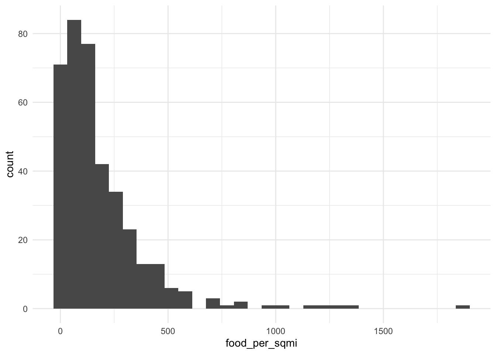
ggplot(tracts, aes(x = log1p(food_per_sqmi))) + geom_histogram(bins = 30) + theme_minimal()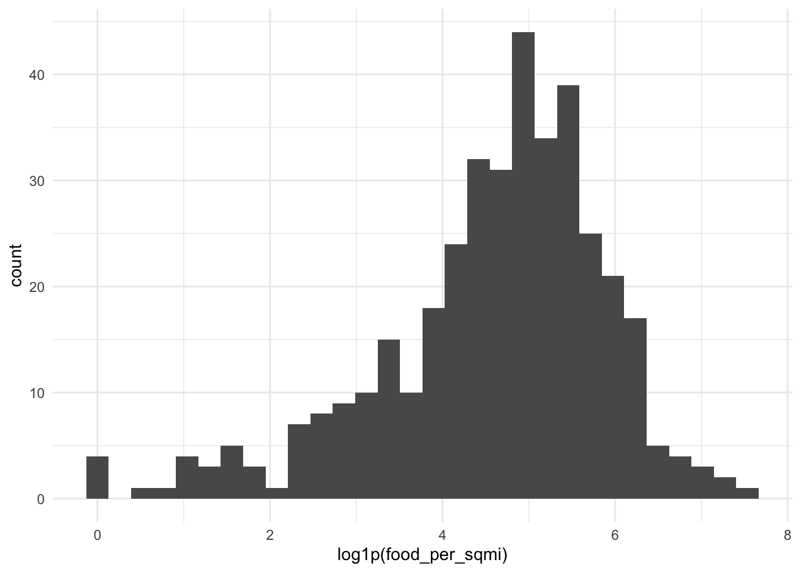
f5 <- update(f4, . ~ . - food_per_sqmi + log1p(food_per_sqmi))
model_log <- model_log %>%
add_row(model = "m5", added = "log of food business density",
cv_rmse = cv_rmse(f5, tracts))
# squared term: log income
ggplot(tracts, aes(x = log(med_hh_incE), y = y)) +
geom_point(alpha = 0.4) +
geom_smooth(method = "lm", formula = y ~ x + I(x^2), se = FALSE, color = "red") +
theme_minimal()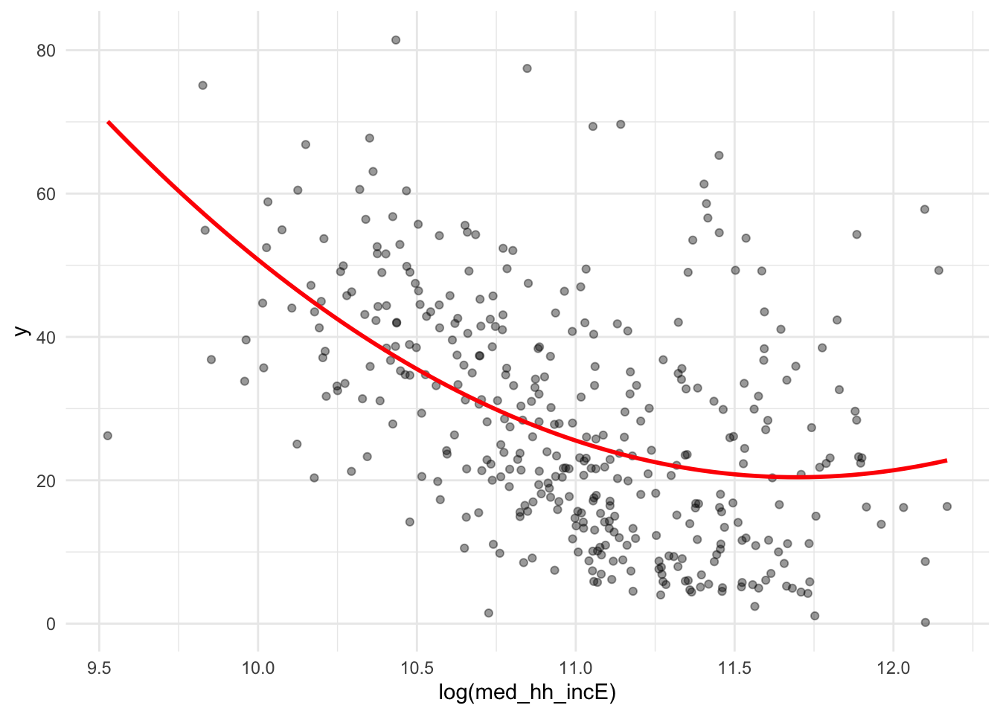
f6 <- update(f4, . ~ . + I(log(med_hh_incE)^2))
model_log <- model_log %>%
add_row(model = "m6", added = "log income squared",
cv_rmse = cv_rmse(f6, tracts))
# categorical: transit access
tracts <- tracts %>%
mutate(
rail_access = if_else(dist_rail_mi <= 0.5, "Within 1/2 mi", "Farther"),
rail_access = factor(rail_access, levels = c("Farther", "Within 1/2 mi"))
)
tracts %>% st_drop_geometry() %>% count(rail_access) rail_access n
1 Farther 199
2 Within 1/2 mi 182ggplot(tracts, aes(x = rail_access, y = y)) +
geom_boxplot() +
theme_minimal()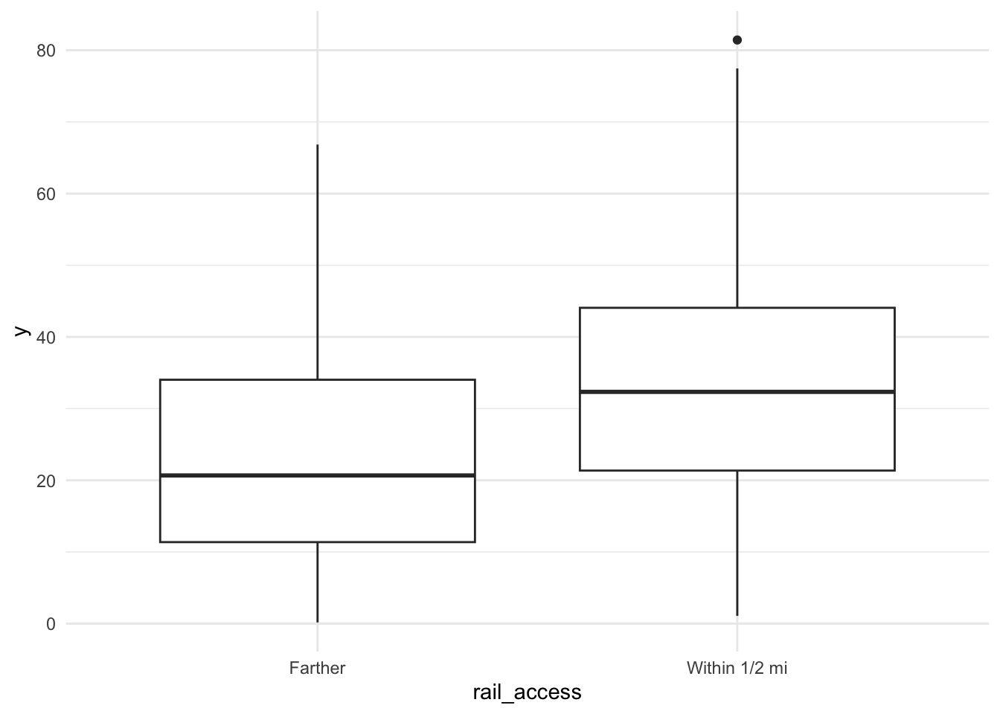
f7 <- update(f4, . ~ . + rail_access)
m7 <- lm(f7, data = tracts)
summary(m7)
Call:
lm(formula = f7, data = tracts)
Residuals:
Min 1Q Median 3Q Max
-23.5309 -5.7095 -0.1655 5.3787 28.2747
Coefficients:
Estimate Std. Error t value Pr(>|t|)
(Intercept) 136.769057 22.014962 6.213 1.40e-09 ***
pct_renter 0.216857 0.028793 7.531 3.84e-13 ***
log(pop_density) 0.718952 0.756422 0.950 0.342
log(med_hh_incE) -11.397835 1.751554 -6.507 2.48e-10 ***
pct_pov 0.041694 0.061681 0.676 0.499
dist_rail_mi 0.165746 1.616492 0.103 0.918
food_per_sqmi 0.019955 0.002748 7.261 2.26e-12 ***
dist_trolley_mi -1.373885 0.189283 -7.258 2.30e-12 ***
rail_accessWithin 1/2 mi 1.630524 1.438293 1.134 0.258
---
Signif. codes: 0 '***' 0.001 '**' 0.01 '*' 0.05 '.' 0.1 ' ' 1
Residual standard error: 9.388 on 372 degrees of freedom
Multiple R-squared: 0.675, Adjusted R-squared: 0.668
F-statistic: 96.58 on 8 and 372 DF, p-value: < 2.2e-16model_log <- model_log %>%
add_row(model = "m7", added = "rail access category",
cv_rmse = cv_rmse(f7, tracts))
model_log# A tibble: 7 × 4
model added cv_rmse notes
<chr> <chr> <dbl> <chr>
1 m1 ACS baseline 11.2 renter share, log density, log…
2 m2 distance to nearest rail station 10.9 Regional Rail + MFL + BSL stat…
3 m3 food business density 10.0 <NA>
4 m4 distance to nearest trolley stop 9.40 SEPTA trolley stations 2023
5 m5 log of food business density 9.86 <NA>
6 m6 log income squared 9.45 <NA>
7 m7 rail access category 9.41 <NA> Answer: Which transformation helped most? For your categorical variable, write one sentence reading one of its coefficients correctly, naming the reference level.
None of the transformations improved meaningfully on m4 (CV RMSE 9.41), but the rail-access category came closest at around 9.41 as well. The squared log income term was slightly worse (9.45). The fitted curve bends upward among the wealthiest tracts, but only a handful of tracts drive that upturn. It is likely that food density and trolley distance already account for them. Logging food business density made the model clearly worse (9.86). The log made the distribution more symmetric, but it compressed the extreme storefront densities in Center City. This already lines up with the city’s highest car-free shares. For the categorical variable, holding the other predictors constant, tracts within half a mile of a rail station have a predicted car-free share about 1.6 percentage points higher than tracts farther away, but this difference is not statistically significant (p = 0.26).
Combine the features and transformations that earned their place, judged by CV RMSE, not p-values.
f_final <- y ~ pct_renter + log(pop_density) + log(med_hh_incE) + pct_pov +
dist_rail_mi + food_per_sqmi + dist_trolley_mi
m_final <- lm(f_final, data = tracts)
summary(m_final)
Call:
lm(formula = f_final, data = tracts)
Residuals:
Min 1Q Median 3Q Max
-22.8350 -5.9566 -0.4081 5.5691 28.5371
Coefficients:
Estimate Std. Error t value Pr(>|t|)
(Intercept) 135.696757 22.003039 6.167 1.81e-09 ***
pct_renter 0.224797 0.027939 8.046 1.15e-14 ***
log(pop_density) 0.726562 0.756681 0.960 0.338
log(med_hh_incE) -11.215306 1.744805 -6.428 3.96e-10 ***
pct_pov 0.041301 0.061704 0.669 0.504
dist_rail_mi -1.079572 1.186347 -0.910 0.363
food_per_sqmi 0.020122 0.002745 7.329 1.45e-12 ***
dist_trolley_mi -1.333588 0.185987 -7.170 4.05e-12 ***
---
Signif. codes: 0 '***' 0.001 '**' 0.01 '*' 0.05 '.' 0.1 ' ' 1
Residual standard error: 9.392 on 373 degrees of freedom
Multiple R-squared: 0.6739, Adjusted R-squared: 0.6678
F-statistic: 110.1 on 7 and 373 DF, p-value: < 2.2e-16model_log <- model_log %>%
add_row(model = "final", added = "baseline + rail, food, trolley; no transformations",
cv_rmse = cv_rmse(f_final, tracts))
model_log# A tibble: 8 × 4
model added cv_rmse notes
<chr> <chr> <dbl> <chr>
1 m1 ACS baseline 11.2 renter share…
2 m2 distance to nearest rail station 10.9 Regional Rai…
3 m3 food business density 10.0 <NA>
4 m4 distance to nearest trolley stop 9.40 SEPTA trolle…
5 m5 log of food business density 9.86 <NA>
6 m6 log income squared 9.45 <NA>
7 m7 rail access category 9.41 <NA>
8 final baseline + rail, food, trolley; no transformations 9.40 <NA> tracts <- tracts %>% mutate(resid_final = residuals(m_final))
ggplot(tracts) +
geom_sf(aes(fill = resid_final), color = NA) +
scale_fill_gradient2(low = "#2166ac", mid = "grey95", high = "#b2182b", midpoint = 0) +
theme_void() +
labs(title = "Final model: where it's wrong",
subtitle = "Red = actual higher than predicted",
fill = "Residual")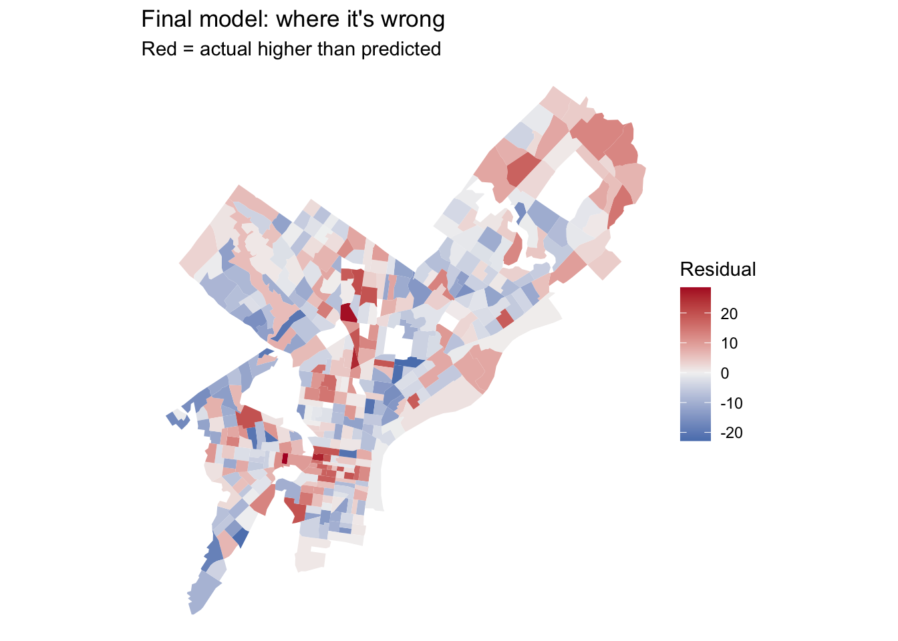
Put your two residual maps side by side, or put them next to each other in the rendered document. Did the clusters from Part 2C shrink? Where did they stay?
resid_maps <- tracts %>%
mutate(
Baseline = residuals(m1),
Final = residuals(m_final)
) %>%
select(Baseline, Final, geometry) %>%
pivot_longer(c(Baseline, Final), names_to = "model", values_to = "resid") %>%
st_as_sf()
ggplot(resid_maps) +
geom_sf(aes(fill = resid), color = NA) +
scale_fill_distiller(palette = "RdBu", limits = c(-36, 36), name = "Residual") +
facet_wrap(~ model) +
labs(title = "Where each model is wrong",
subtitle = "Red = actual higher than predicted") +
theme_void()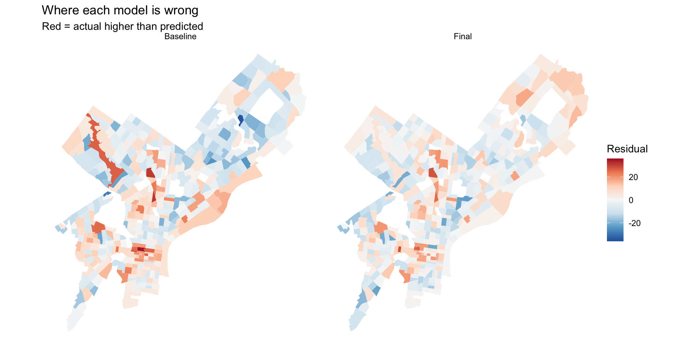
Overall, the clusters from Part 2C mostly shrank. The long red tract in the northwest, the red strip along the Delaware riverfront, and the solid blue across the northeast all faded in the final model. The Center City cluster shrank the most, from several dark red tracts to a few lighter ones, which suggests food business density and trolley access captured much of what set the core apart. However, a handful of tracts in Center City are still underpredicted, and one small tract north of Center City remains dark red in both maps. Parts of southwest are still overpredicted and the northeast moved from slight overprediction to slight underprediction. Yet, the remaining errors appear smaller and more scattered than the baseline’s.
ggplot(tracts, aes(x = y_cv, y = abs(resid_final))) +
geom_point(alpha = 0.5) +
geom_smooth(se = FALSE) +
labs(x = "CV of your outcome estimate (%)", y = "Size of the miss") +
theme_minimal()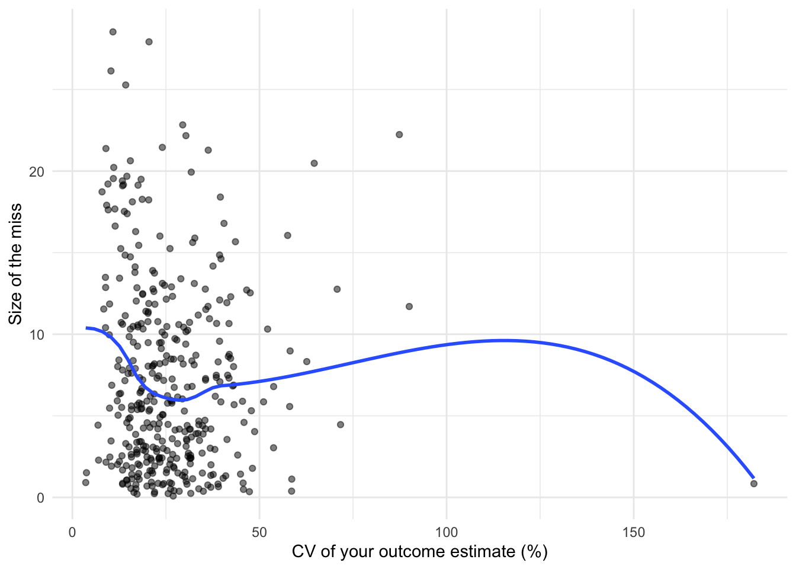
sqrt(mean((tracts$y_moe / 1.645)^2))[1] 6.417662Answer in prose, drawing on your model log (incorporate our words of the day for bonus points. just kidding):
β̂ reading suggests that holding the other predictors constant, each additional 100 food businesses per square mile is associated with a car-free share about 2.0 percentage points higher, which is 0.0201 per business per square mile.
ŷ reading suggests that for two tracts identical on every other predictor (one with 100 food businesses per square mile and one with 300) the model predicts a car-free share about 4 points higher for the second.
4.How much of the remaining error might be uncertainty or statistical noise? There is likely to be a significant share of it. In running sqrt(mean((tracts$y_moe / 1.645)^2)), the outcome’s typical standard error is about 6.4 percentage points. Squaring that against the final CV RMSE of 9.41 means sampling noise in the ACS estimates could account for nearly half of the model’s squared error. Setting the noise aside leaves about 6.9 points of error that the model could still reduce. The last plot shows that the largest misses (20 to 28 points) are in tracts with CVs between 10% and 40%, where the estimates are fairly precise. Least reliable tracts don’t seem to have unusually large misses. Noise limits how accurate any model can be, but the largest errors emerge between places that my predictors don’t measure.
Render this document to HTML and submit the link on Canvas by Friday, October 16. I’ll miss you all terribly while I’m away. Please send letters or correspondences to my office mailbox.